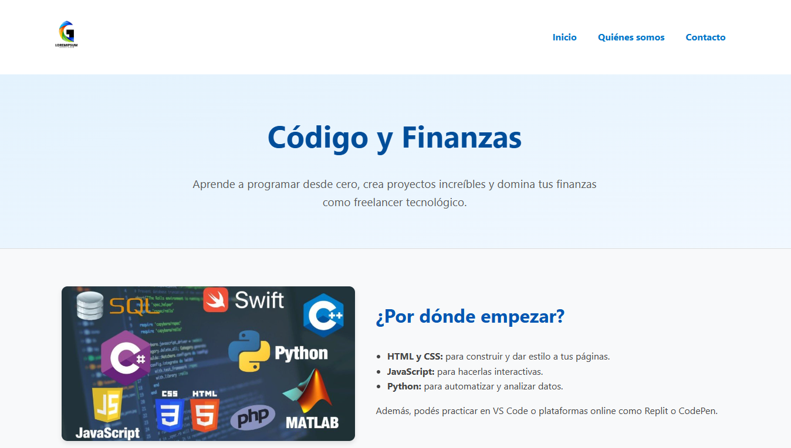

Proyecto Amiurumis
Contexto: Mi primer sitio web fue una página dedicada a los amigurumis, donde combiné el arte del tejido con diseño web para crear una experiencia visual atractiva.

Portafolio Personal
Contexto: Este sitio web representa mi identidad profesional como desarrolladora. Fue creado para reunir mis proyectos, habilidades y estilo visual de forma coherente.

Sitio Informativo Simple
Contexto: Uno de mis primeros proyectos prácticos, orientado a aplicar las bases de HTML y CSS para estructurar contenido de manera limpia.